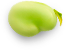
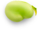
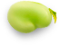

Footblog
Здесь вы найдете рецепты на любой вкус от лучшего шеф-повара Рыжего Михаила
смотреть все рецепты


 
Здесь вы найдете рецепты на любой вкус от лучшего шеф-повара Рыжего Михаила
смотреть все рецептыЭти толстые панкейки похожи на маленькие суфле: внутри напоминают крем, а снаружи золотистые и хрустящие. Стопка таких панкейков прекрасно смотрится на фото.
Узнать рецептЭти толстые панкейки похожи на маленькие суфле: внутри напоминают крем, а снаружи золотистые и хрустящие. Стопка таких панкейков прекрасно смотрится на фото.
Узнать рецептЭти толстые панкейки похожи на маленькие суфле: внутри напоминают крем, а снаружи золотистые и хрустящие. Стопка таких панкейков прекрасно смотрится на фото.
Узнать рецептЭти толстые панкейки похожи на маленькие суфле: внутри напоминают крем, а снаружи золотистые и хрустящие. Стопка таких панкейков прекрасно смотрится на фото.
Узнать рецепт